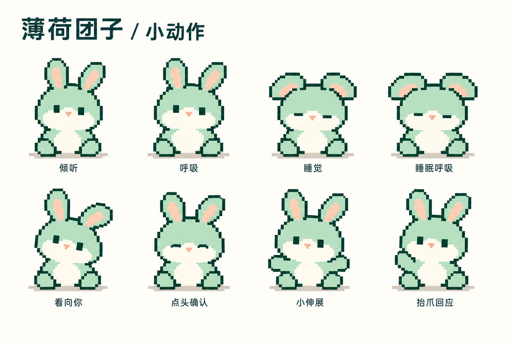
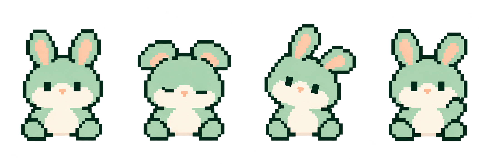

03 · 小动作与表情关键姿态探索常驻动作轻，交互回应短。 倾听与睡眠通过微弱呼吸维持存在感；hover 歪头转耳，唤醒小伸展，操作成功轻点头或抬爪一次。这些动作不延迟面板收起，也不干扰评论焦点。
04 · 透明角色试样切换背景与尺寸深色浅色透明网格小入口展开面板放大同一只兔子在不同背景上是否还清楚？ 小入口预览的角色约 27px 高，展开面板约 68px 高，用于观察轮廓和表情的取舍。这里已有透明底素材，后续需要统一像素网格与颜色再制作正式资源。